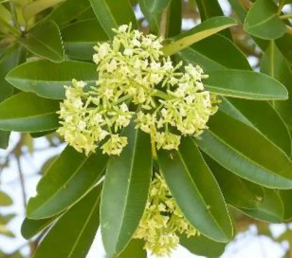
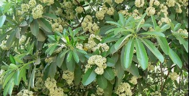

PHOTOS:


Botanical Name: Alstonia scholaris
Common name: Chitvan
The Dita tree thrives in tropical and subtropical regions, commonly found in Southeast Asia, India, and northern Australia. It grows in forests, coastal areas, and lowland plains, preferring moist, well-drained soils. They are cultivated through seed sowing or planting seedlings in well-drained, moist soil. They require full sunlight and are often spaced widely to allow for their large size. Regular watering and occasional fertilization support their growth. The Dita tree has several medicinal uses, including treating fevers, respiratory ailments, and digestive issues. Its bark is used for diarrhea, dysentery, and malaria. Additionally, it has antimalarial, antimicrobial, and anti-inflammatory properties. However, it's important to consult healthcare professionals before use.